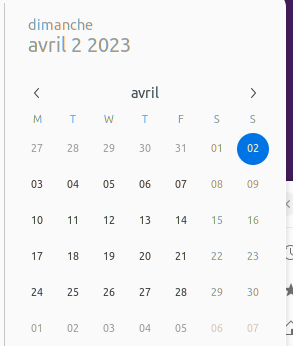
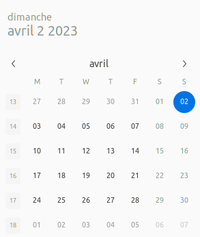

Week 13 - April 23
Sunday 04/02
ubuntu desktop gnome - calendar widget
Display week number in ubuntu calendar widget
gsettings set org.gnome.desktop.calendar show-weekdate true
(before)

(after)
github.com WARNING: REMOTE HOST IDENTIFICATION HAS CHANGED!
after March-24 [2023] I have this message when dealing with github.com
@@@@@@@@@@@@@@@@@@@@@@@@@@@@@@@@@@@@@@@@@@@@@@@@@@@@@@@@@@@
@ WARNING: REMOTE HOST IDENTIFICATION HAS CHANGED! @
@@@@@@@@@@@@@@@@@@@@@@@@@@@@@@@@@@@@@@@@@@@@@@@@@@@@@@@@@@@
IT IS POSSIBLE THAT SOMEONE IS DOING SOMETHING NASTY!
Someone could be eavesdropping on you right now (man-in-the-middle attack)!
It is also possible that a host key has just been changed.
The fingerprint for the RSA key sent by the remote host is
SHA256:uNiVztksCsDhcc0u9e8BujQXVUpKZIDTMczCvj3tD2s.
Please contact your system administrator.
Add correct host key in /home/explore/.ssh/known_hosts to get rid of this message.
Offending RSA key in /home/explore/.ssh/known_hosts:1
remove with:
ssh-keygen -f "/home/explore/.ssh/known_hosts" -R "github.com"
Host key for github.com has changed and you have requested strict checking.
Host key verification failed.
fatal: Could not read from remote repository.This is explained at
From Github:
At approximately 05:00 UTC on March 24 [2023], out of an abundance of caution, we replaced our RSA SSH host key used to secure Git operations for GitHub.com. We did this to protect our users from any chance of an adversary impersonating GitHub or eavesdropping on their Git operations over SSH. This key does not grant access to GitHub’s infrastructure or customer data. This change only impacts Git operations over SSH using RSA. Web traffic to GitHub.com and HTTPS Git operations are not affected.
SOLUTION: Remove old RSA SSH key of github from .ssh/ known_hosts and update the new one.
And I fixed it y running
ssh-keygen -R github.comTuesday 04/04
wsl upgrade
1.1.7 has been released and it fixes my icons issue.
Unfortunately a side effect is Starting GUI apps takes longer with new version
(update April/11) sarim suggests to create these links ln -s /mnt/wslg/runtime-dir/wayland-0* /run/user/1000/. And then I deleted them due to side effects but at the end it fixed it anyway.
Wednesday 04/05
wsl upgrade
1.2.0 released and installed
Still this side effect
new fastai courses: Practical Deep Learning for Coders - Part 2
(tweet from jeremy)
I know what I will do in the following weeks !
Week 16 - April 23
Friday 04/21
wsl upgrade
1.2.5 released and installed
Issue Starting GUI apps takes longer with new version fixed
Issue WSL some icons in taskbar for linux applications are defaulting to Tux back
and a new issue when starting sublime-text (kill the session), I should open a ticket
snap
Strange that we need sudo to install snap apps.
Found this https://forum.snapcraft.io/t/sudo-snap-install-or-just-snap-install/3909 that explains that sudo snap login is needed then snap can be used without sudo. Should try that but it requires an Ubuntu account.
Week 17 - April 23
Monday 04/24
wsl crash with sublime-text
Issue opened: https://github.com/microsoft/wslg/issues/1051
Wednesday 4/26
autoencoder day
I have kept the full day to work on autoencoders and specially conditional VAE.
I would like to update latent space structure based on a different information, and I have found a nice paper explaining such an approach Variational AutoEncoder For Regression: Application to Brain Aging Analysis. There is a tensorflow-keras implementation located at VAE for Regression
KL divergence
Time to get closer look to KL divergence, and this source is a good starting point. As I had understood, there is a direct link with entropy. KL divergence is a way to calculate how much information is lost when we approximate one distribution with another.
bayesian statistics
This site suggests a book to learn about bayesian statistics. May be a good idea to go through it: https://nostarch.com/learnbayes
VAE And a starting point for VAE from arxiv: Tutorial on Variational Autoencoders
monte carlo simulation
This points to an introduction to monte carlo simulation using R
makov-chain optimization
And even the optimization of markov-chain using linear algebra Understanding Markov Chains with the Black Friday Puzzle
countbayesie
Very complete site to have a global overview of such techniques.
There is a blog (and rss feed) at https://www.countbayesie.com/. (added to feedly)
Pyro and probabilistic programming language (PPL)
By going through these resources, they mention Edward which is a library to run these experimentations in python using tensorflow/keras. There is a paper around these techniques Deep Probabilistic Programming.
By looking for something more modern, using pytorch, I found Pyro.ai which has tons of content: > Pyro is a universal probabilistic programming language (PPL) written in Python and supported by PyTorch on the backend. Pyro enables flexible and expressive deep probabilistic modeling, unifying the best of modern deep learning and Bayesian modeling. It was designed with these key principles:
I would like later to go through Pyro examples, and apply some of the examples in my data. For example there is something about conditional VAE.